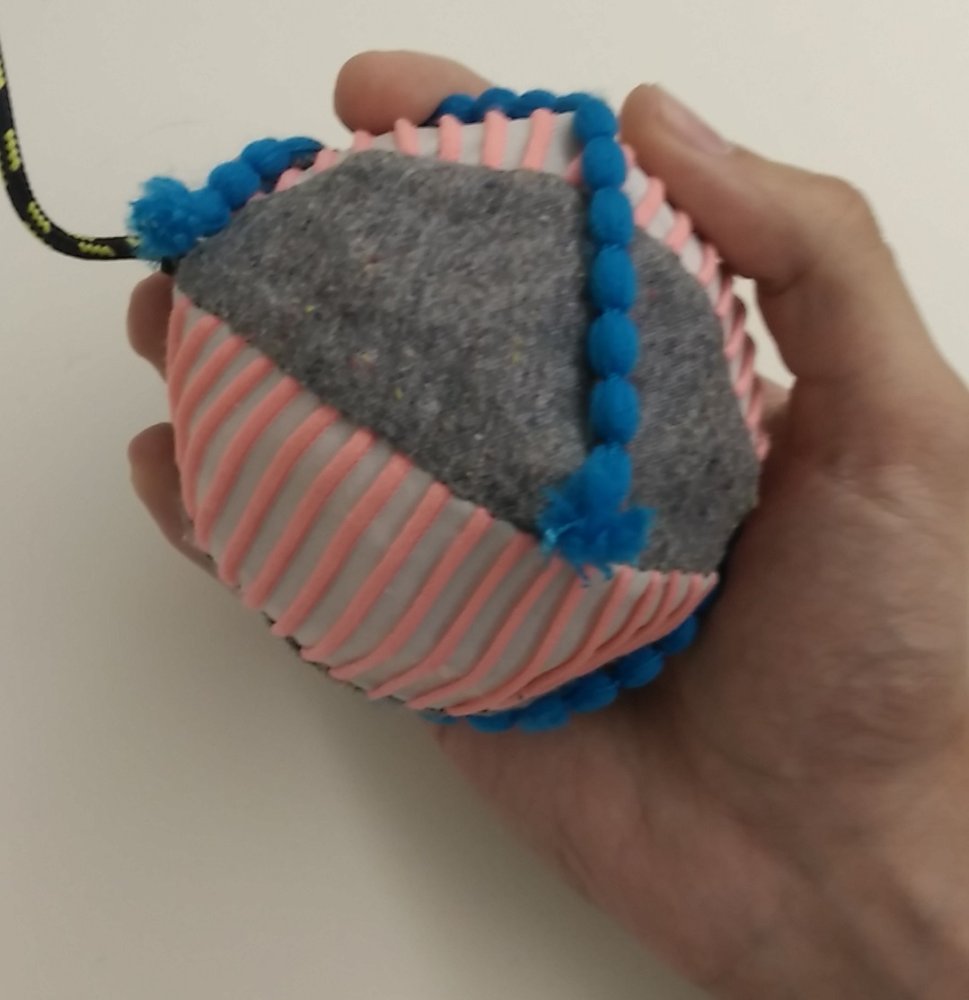
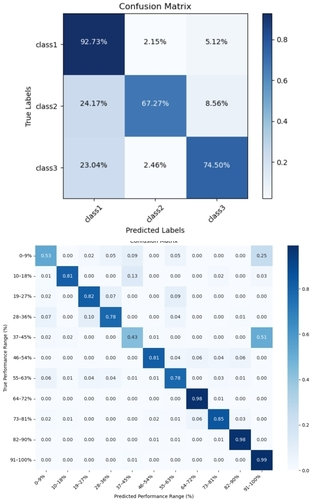
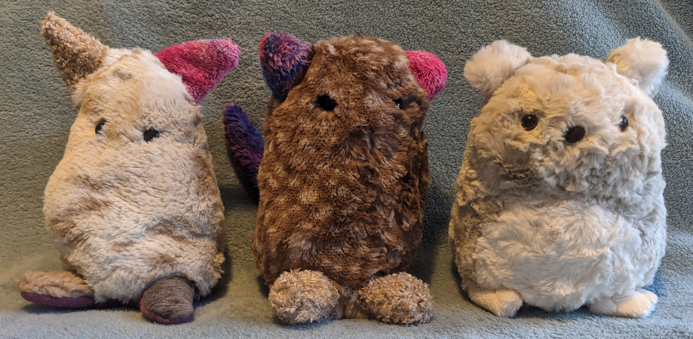
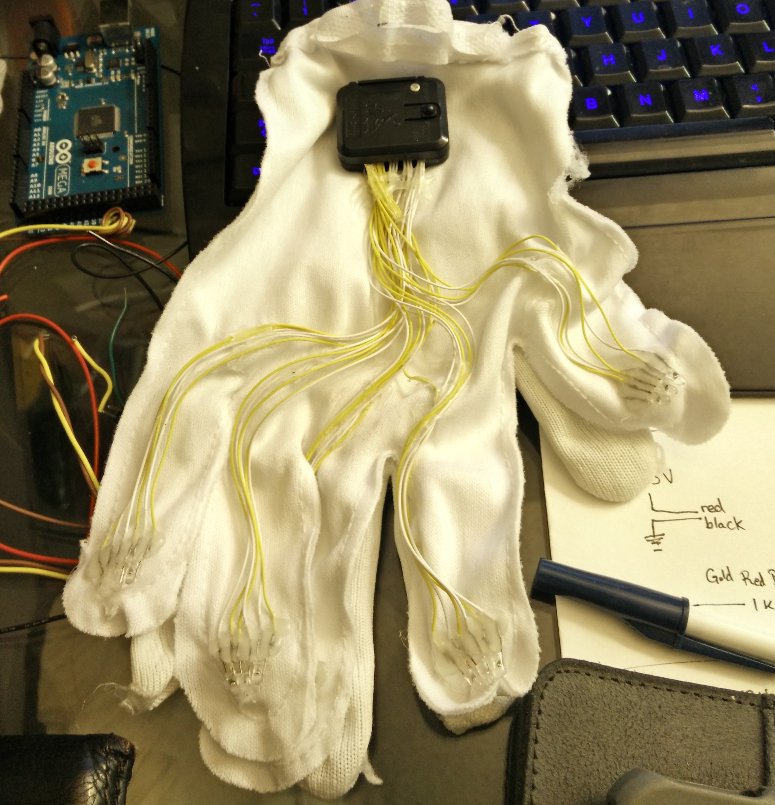
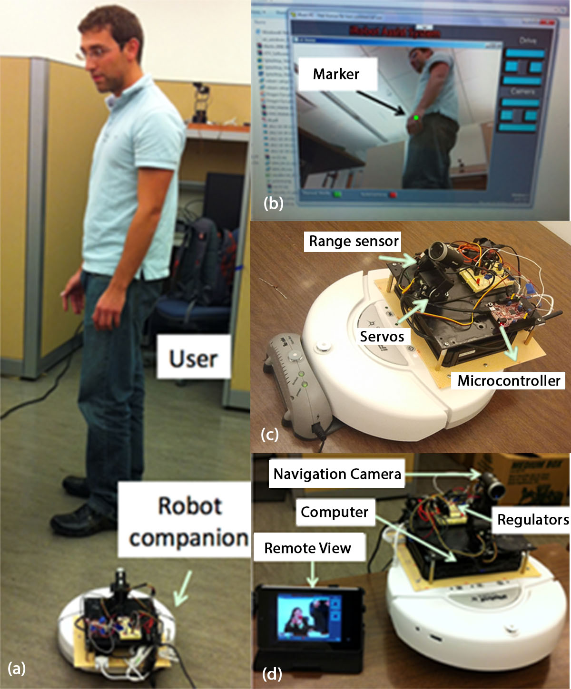

Research Projects
For a list of publications see my Google Scholar page.
2017-2021 -- Fidget Ball for ADHD Intervention

Fidgeting is a natural phenomenon but fidgeting under observation is not. This long running project was developed out of work first started at NYU by Katherine Isbister. We started on a suite of tools to allow tracing and interpreting fidgeting behavior in the wild through soft objects with embedded sensors. We use a mixture of custom made and market ready sensors in deformable bodies for more comfortable usage by participants in the wild and in controlled laboratory settings. This data can then be interpreted by therapists, researchers or doctors depending on the usage. I acted as the hardware and software lead for the project, developing connections between microcontrollers and sensors.
Our partnership with both a machine learning researcher to help interpret the large-scale data set and the MIND institute at UC Davis allowed us to structure our device appropriately so that eventually we'd be able to interpret the data in real-time, and provide prompts to users when their absent minded fidgeting had progressed from helpful regulation to distraction. The project is currently under an NIH grant and is in full scale clinical trial to test efficacy.

The platform has continued to generate work after my involvement ended. A 2026 CHI paper by the UC Davis and UCSC teams used the sensor-enabled fidget ball to test whether spontaneous fidgeting can serve as a behavioral signal of cognitive load. Analyzing tactile interaction traces captured while adults with ADHD performed the Paced Auditory Serial Addition Test, the team found that fidgeting patterns reliably distinguish levels of time pressure and correlate with task accuracy — suggesting soft tangible interfaces can act as an unobtrusive channel for sensing cognitive state. I was not part of the writing team; the study builds on the device and data collection methods I developed.
Nasiri, N., Isbister, K., Elkaim, G. H., Cottrell, P. S., Schweitzer, J. B., Borden, J., & Goodman Shapiro, D. 2026. Extracting Cognitive State from Fidgeting Behavior via a Soft Tangible Interface. In Extended Abstracts of the 2026 CHI Conference on Human Factors in Computing Systems (CHI EA '26). pg. 1-5. DOI: https://doi.org/10.1145/3772363.3798867
Shapiro, D., Zhan, Z., Cottrell, P., & Isbister, K. 2019. Translating Affective Touch into Text. In Proceedings of Conference on Human Factors in Computing (CHI 2019).
Cottrell, P., Grow, A., & Isbister, K. 2018. Soft-bodied Fidget Toys: A Materials Exploration. In Proceedings of the Twelfth International Conference on Tangible, Embedded, and Embodied Interaction (TEI '18). pg. 42-48. DOI: https://doi.org/10.1145/3173225.3173266
2017-2020 -- Soft-bodied Worry Pet for Structured Self-Soothing in Children

Helping to intervene in the anxiety cycle can help young children learn to self-regulate but trying to find the right device and time to intervene can be difficult. It was developed in parallel to the fidgeting device, using similar methods toward different aims. We used a mixture of custom made and market ready sensors in deformable bodies. These embedded sensors help therapists determine interaction time and frequency in the wild and can help structure future discussions.
I acted as the hardware and software lead for the project, developing communications between microcontrollers and sensors. For published information on initial results from the project see the publications below, the ToCHI article is the most complete account of the project development.
These articles follow the multidisciplinary team from early development of potential designs and smart material investigations through the hand off to commercial production with Sproutel. I worked as the legacy researcher for 4 years helping to keep a throughline on the product while it was at UCSC and during the hand-off to the commercial team. I worked with machine learning experts to attempt to process the data on a larger scale and develop wider trends from across the population. I also supported the user studies and performed data analysis after our team of child psychologists deployed the device in the wild to investigate the effect on the target population.
The commercial product Purrble has been highlighted in Time Magazine's "Best Inventions of 2021", and featured on QVC.
Isbister, K., Cottrell, P., Cecchet, A., Dagan, E., Theofanopoulou, N., Altarriba Bertran, F., Horowitz, A., Mead, N., Schwarz, J., & Slovak, P. 2022. Design (not) Lost in Translation: A Case Study of an Intimate-Space Socially Assistive "Robot" for Emotion Regulation. ACM Transactions on Computer-Human Interaction (TOCHI) 29 (4), pg. 1-36. DOI: https://doi.org/10.1145/3526110
Slovak, P., Theofanopoulou, N., Cecchet, A., Cottrell, P., Altarriba Bertran, F., Dagan, E., Childs, J. & Isbister, K. 2018. "I just let him cry..." Designing Socio-Technical Interventions in Families to Prevent Mental Health Disorders. In Proceedings of the ACM on Human-Computer Interaction. pg. 1-34.
2015-2017 -- Soft-Robot Gloves for Stroke Survivors Fine Motor Skill Rehabilitation

Tremors are an ongoing issue that stroke survivors face years after their incident. After performing expert interviews with physical therapists and recovery patients alike they mentioned this as a primary annoyance.
In an attempt to counteract tremors in patient's hands we used piezoresistive plastics along the length of the fingers to help stretch, resist and counter to the user's tremor. After initial prototypes were developed and similar technology was being developed concurrently at MIT, we decided to pivot to alternative therapies for stroke rehabilitation.
While the work remains unpublished, we pivoted to developing an at-home daily exercise device for early non-invasive intervention for stroke survivors.
Cottrell, P., Kurniawan, S., Teodorescu, M. 2016. Personalized intelligent prosthesis for tremor suppression. SIGACCESS Access. Comput. 114 (March 2016), 25-28. DOI: http://dx.doi.org/10.1145/2904092.2904098
2012-2013 -- Live-in ASSistant for Independence and Elder-care (LASSIE)

LASSIE was a tele-operated robot with capabilities for vital sign detection I helped develop as part of my undergraduate thesis project, under the guidance of a graduate student Sebastian Hening.
This robot was designed with older people living alone in mind to help determine the condition of the user and what level of emergency services were needed if any after a fall was detected. I helped retool an FFT algorithm to read heart and breath rates from a low-cost web camera, and extrapolate if these rates were outside of a normal range. I ended my undergraduate work on LASSIE with a modified algorithm that detected a heart rate with a 70% success rate. The project took 1st place in the “IT for Society” division of the Big Ideas@Berkeley competition, earned the Dean’s and Chancellor's Award for Outstanding Undergraduate Research, and I presented our findings at the PETRA 2013 conference in Greece.
Hening, S., Cottrell, P., Teodorescu, M., Kurniawan, S. and Mantey, P. 2013. Assistive living robot: a remotely controlled robot for older persons living alone. In Proceedings of the 6th International Conference on PErvasive Technologies Related to Assistive Environments (PETRA '13). ACM, New York, NY, USA, , Article 10 , 4 pages. DOI: http://dx.doi.org/10.1145/2504335.2504345
Additional Research and Internships
Companion Labs Internship - Spring 2020
Right as the Covid-19 pandemic arrived in the US in March of 2020, I began helping to Beta test the Companion dog training device, advising on how pet parents were interacting with the device at home and what information they required to properly interface with the device for effective dog training.
The internship allowed me to interact with several investors and personally introduce them to the AI driven pet training device to entice them to invest in the next stage of deployment as the company pivoted from in-shelter deployment to at-home devices.
My work also included developing the website and pet-parent facing advice pages.
Blind Formatting Tool - 2014
While not my project directly I helped in the documentation of a tool for blind users to format their documents that my labmate developed.
Morales, L. M., Arteaga, S. M., Cottrell, P., & Kurniawan, S. (2014). Design Guidelines of Tools for Facilitating Blind People to Independently Format Their Documents. In Computers Helping People with Special Needs (pp. 634-641). Springer International Publishing.
Morales-Villaverde, L. M., Arteaga, S. M., Adams, D., Cottrell, P., & Kurniawan, S. Exploring System Requirements for Blind-Friendly Document Formatting Tools.
Toyota ITC Internship - Spring 2014
During the spring of 2014, I spent 3 months conducting interviews and performing paper reviews at Toyota ITC, investigating the use of Robotics in the world of Health Care and how we might improve robot to human hand-over techniques in hospice settings.
Patents
Martinson, E., Cottrell, P. 2020. Gait Analysis Medical Assistance Robot. US Patent 10383552